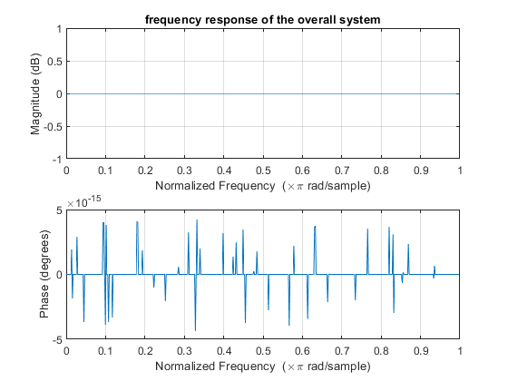

Digital Signal Processing MATLAB HW2 - q5
Professor: Dr. Sheikhzadeh Author: Maryam Barazande - 9723016 E-mail: maryambarazande7@gmail.com University: Amirkabir University of Technology
Contents
Clear recent data
clear; close all; clc;
Equalizer
PART 1
a = load('a.mat'); a = cell2mat(struct2cell(a)); b = load('b.mat'); b = cell2mat(struct2cell(b)); figure(1); freqz(b,a); title("frequency response of the channel");
PART2
figure(2);
zplane(b,a);
title("pole-zero locations of the channel system function");
PART3
audioFile = 'HW2_Q6_voice.wav'; [audio , Fs] = audioread(audioFile); L = length(audio); slength = L/Fs; t = (linspace(0, slength, L))'; freq_domain = fftshift(fft(audio)); freq_L = length(freq_domain); freq_grid = (-freq_L/2 : freq_L/2-1) / (freq_L/Fs); figure(3); subplot(2,1,1); plot(freq_grid,abs(freq_domain)); xlabel("Freqency(Hz)"); ylabel("magnitude"); title("frequency spectrum of Audio file"); subplot(2,1,2); plot(freq_grid,angle(freq_domain)); xlabel("Freqency(Hz)"); ylabel("Phase"); % sound(audio,Fs); % to hear the original audio uncomment this line
PART4
y = filter(b,a,audio); % Time Domain figure(4); plot(t,y); title("output of filtered audio in time domain"); xlabel('Time'); ylabel('Amplitude'); ylim([-20,20]); % Frequency Domain y_f = fftshift(fft(y)); figure(5); subplot(2,1,1); plot(freq_grid,abs(y_f)); title("output of filtered audio in frequency domain"); xlabel("Freqency(Hz)"); ylabel("magnitude"); subplot(2,1,2); plot(freq_grid,angle(y_f)); xlabel("Freqency(Hz)"); ylabel("phase"); % sound(y,Fs); % to hear the audio after filter uncomment this
PART5
Design Zero forcing equalizer
b_eq = a; a_eq = b; figure(6); zplane(b_eq,a_eq); title("pole-zero locations of the Zero forcing equalizer "); y_eq = filter(b_eq,a_eq,y); figure(7); freqz(b_eq,a_eq); title("frequency response of the equalizer");

PART6
a_overal = conv(a,a_eq);
b_overal = conv(b,b_eq);
figure(8);
freqz(b_overal,a_overal);
title("frequency response of the overall system");
 PART8
n4 = 4; range4 = 2^(n4-1); aq4 = round(a_eq*range4)/range4 ; bq4 = round(b_eq*range4)/range4 ; n8 = 8; range8 = 2^(n8-1); aq8 = round(a_eq*range8)/range8 ; bq8 = round(b_eq*range8)/range8 ; n16 = 16; range16 = 2^(n16-1); aq16 = round(a_eq*range16)/range16 ; bq16 = round(b_eq*range16)/range16 ; n32 = 32; range32 = 2^(n32-1); aq32 = round(a_eq*range32)/range32 ; bq32 = round(b_eq*range32)/range32 ; figure(9); subplot(2,2,1); zplane(bq4,aq4); title("pole-zero locations of quantized coefficients with n = 4"); subplot(2,2,2); zplane(bq8,aq8); title("pole-zero locations of quantized coefficients with n = 8"); subplot(2,2,3); zplane(bq16,aq16); title("pole-zero locations of quantized coefficients with n = 16"); subplot(2,2,4); zplane(bq32,aq32); title("pole-zero locations of quantized coefficients with n = 32");
PART7
function [dynamic_range] = quantize_m(v,n) range = 2^(n-1); for i = 0:length(v) if v(i)>max max = v(i); end if v(i)<min min = v(i); end end dynamic_range = max - min; end